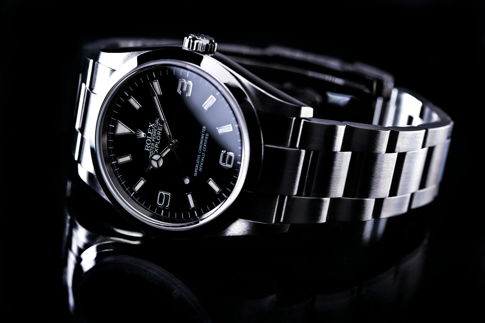

Rolex Oyster Perpetual
el Oyster Perpetual fue diseñado para aquellos que ven el mundo como un lugar lleno de posibilidades ilimitadas.
el Oyster Perpetual fue diseñado para aquellos que ven el mundo como un lugar lleno de posibilidades ilimitadas.
Seiko ha superado las expectativas de los buceadores con su tecnología innovadora.
Con la forma octogonal redondeada de su bisel, la ingeniosa construcción en forma de ojo de buey de su caja y su esfera con relieve horizontal.
Seiko ha superado las expectativas de los buceadores con su tecnología innovadora. Un reloj que te guía a través de los desafíos en el azul profundo.
Cualquier día puede dejar una huella duradera en nuestras vidas y sentar las bases para nuevas aspiraciones. Desde su creación en 1945.
El Tissot V8 es un cronógrafo de carreras por excelencia que ofrece un cronometraje preciso gracias al fiable cuarzo y a los calibres automáticos de los mecanismos.
El Chronomat Automatic GMT 40 es el homenaje de Breitling a los viajes, no sólo por su indicación de doble huso horario, sino también por su estética desenfadada.